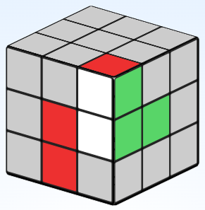
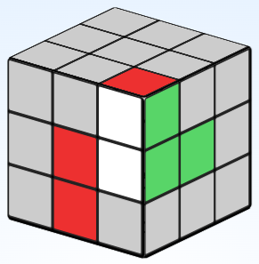

This page is for once you have completed the main tutorial. It includes some tips on memorising algorithms, some faster ways to do some of the steps, and some more advanced methods if you would like to start getting faster.
This page is a work in progress. More will be added as time goes on
There is another more efficent way to insert some corners. It looks like the case below.

The other way of inserting the corner moved it out of the way first and then lifted the cross piece up. This one lifts the corner with the cross piece. The moves look like this
 


As you can see it is a little harder to undestand what is going on but it uses less moves and doesn't reqire any cube rotations or extra setup.
This section will cover some trick on memorizing the algorithms for the second layer.
First we need to figure out which way the edge needs to go. For this example we need it to go into the slot on the right.

To start we are going to move the piece the opposite direction we need it to go. So for this example the edge will be solved when it goes to the right so we are going to start by moving it to the left like this:
Then we are going to lift the corner up to the top layer like this

Then we are going to bring our edge back to where it started like this
Then we are going to fix our cross edge while 'sticking' the corner to the edge like this
Now we are going to move our paired pieces out of the way like this
Then we'll lift our other cross edge, put the edge in, and then fix our cross edge like this

This section will cover tips on how to memorize the algorithm to solve the cross edges
If you learn more advanced methods then you will use this algorithm for another purpose. It is known as an anti-sune.
The most important pieces to watch during the algorithm are these.
Watch where the pieces go during the algorithm